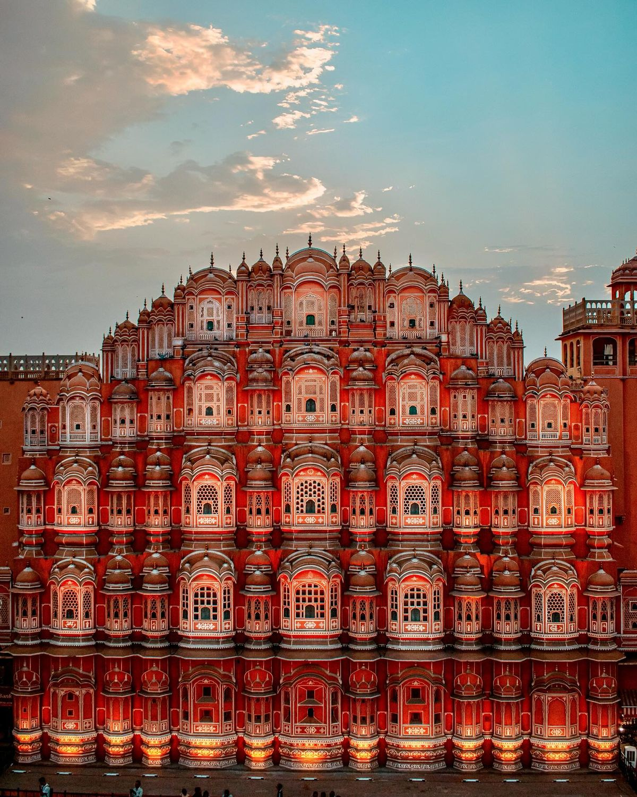
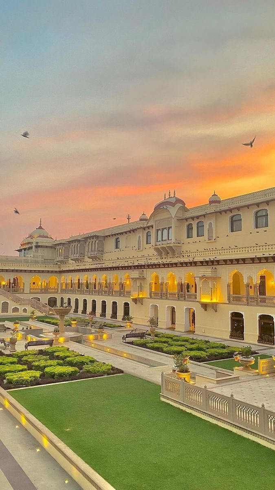
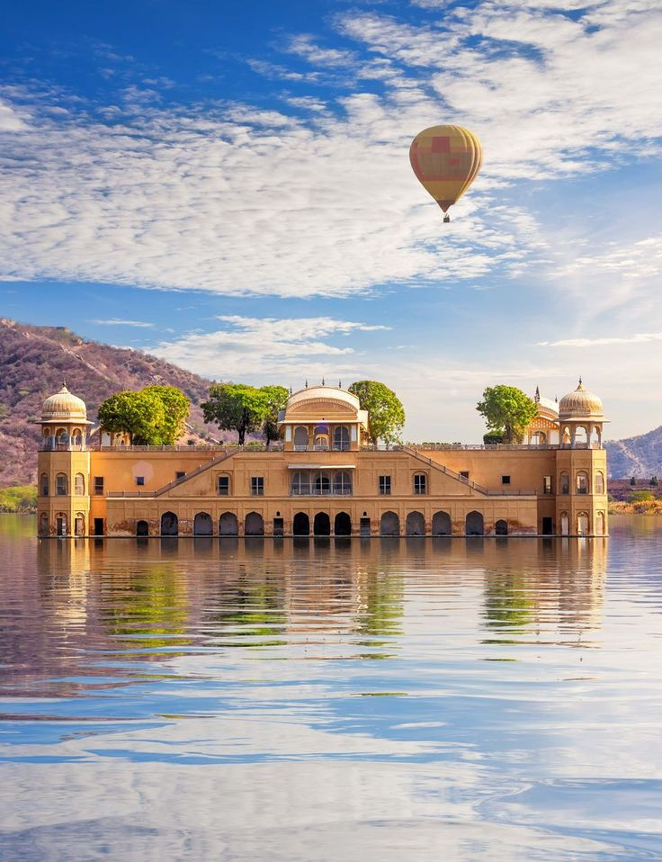
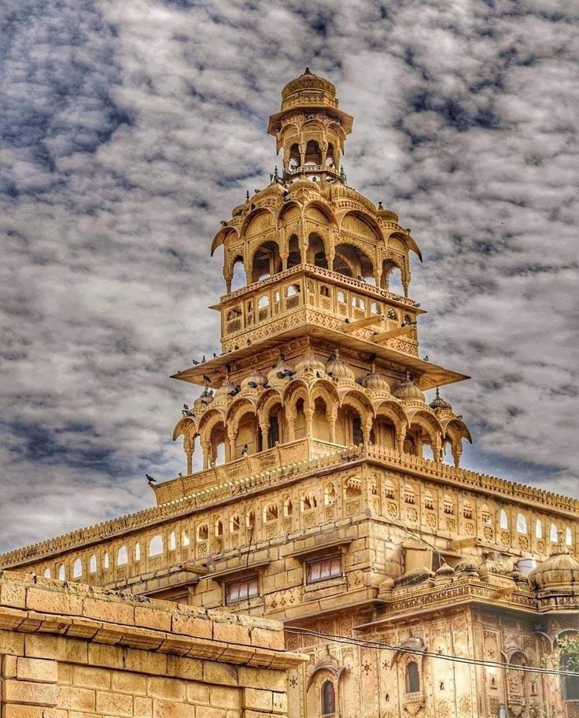
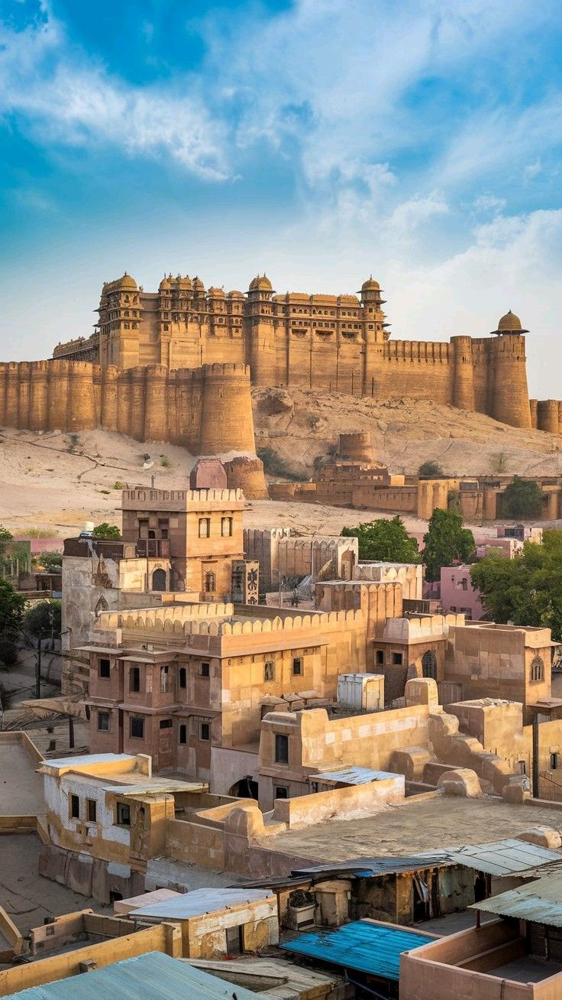
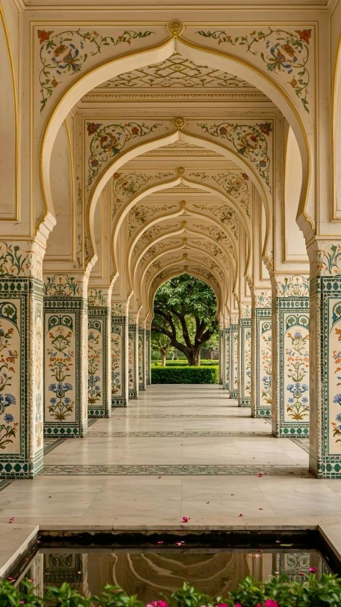
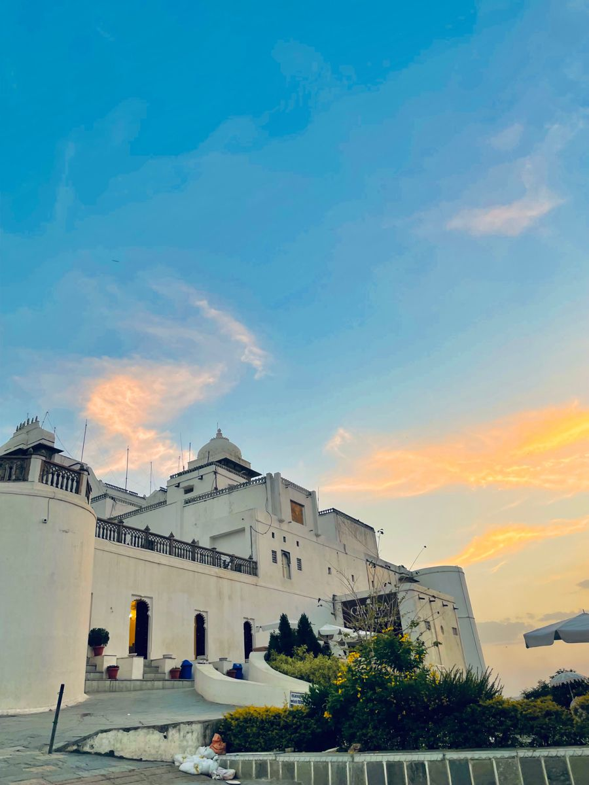
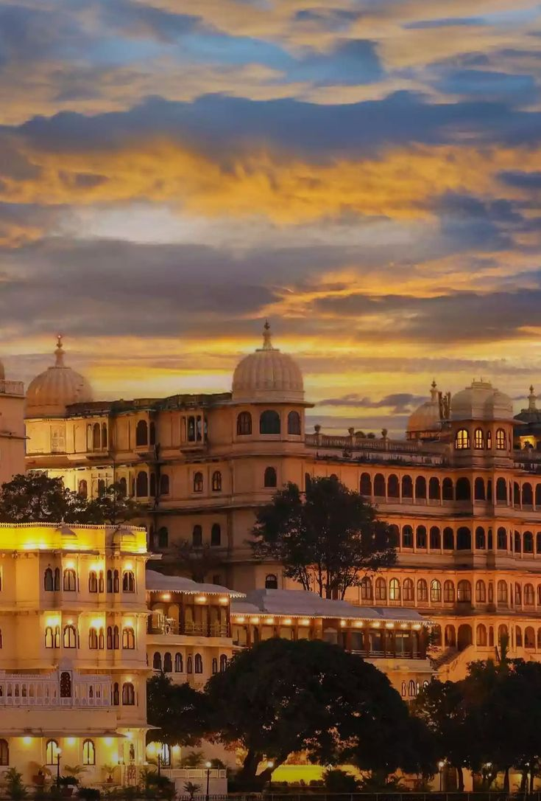
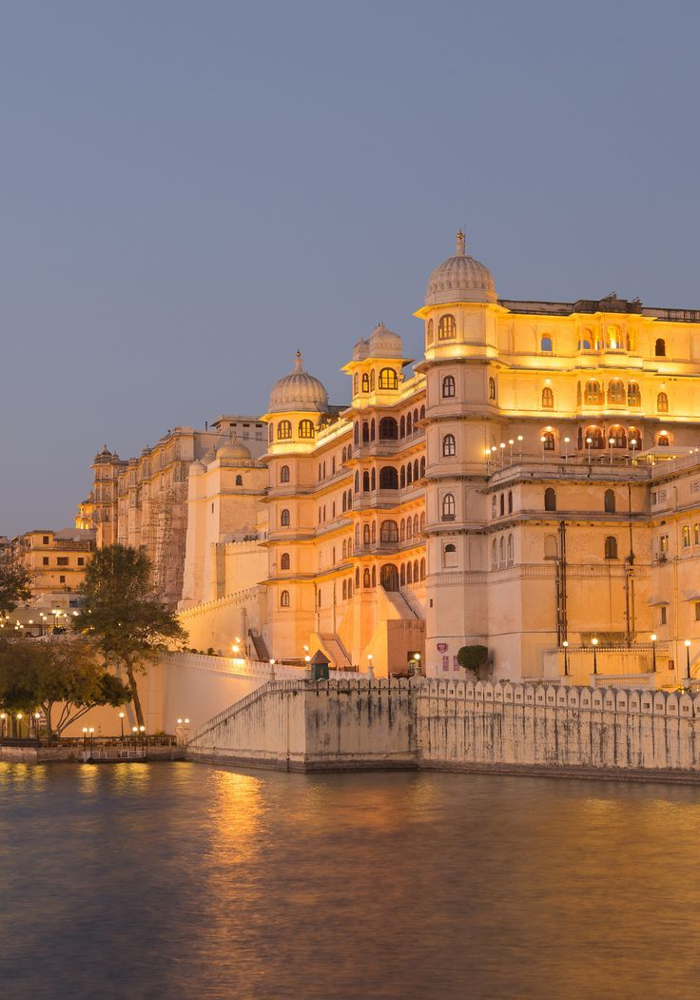

3D Interactive Gallery










Explore the majestic land of Rajasthan through our immersive 3D gallery. Discover royal palaces, golden deserts, and vibrant culture in an interactive experience.
The capital city known for its magnificent palaces, historic forts, and vibrant bazaars. A perfect blend of royal heritage and modern culture.
Romantic city surrounded by beautiful lakes and majestic palaces, often called the Venice of the East.
The golden city rising from the sands of Thar Desert, famous for its sandstone architecture and desert culture.
The blue-walled city dominated by the mighty Mehrangarh Fort, offering panoramic views and rich history.
A holy town centered around Pushkar Lake, famous for its Brahma Temple and annual camel fair.
Meet our AI-powered Rajasthan travel assistant! Get personalized recommendations, historical insights, and travel tips for your Rajasthan journey.